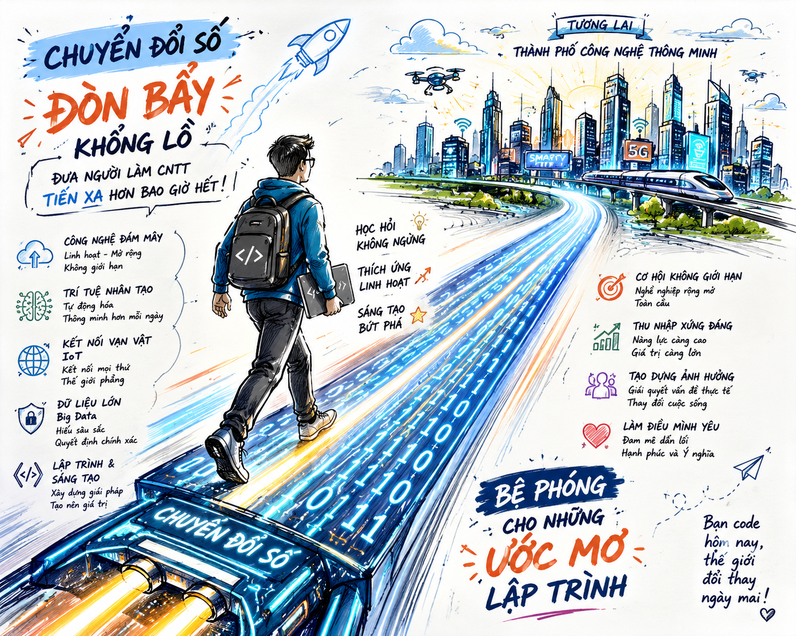
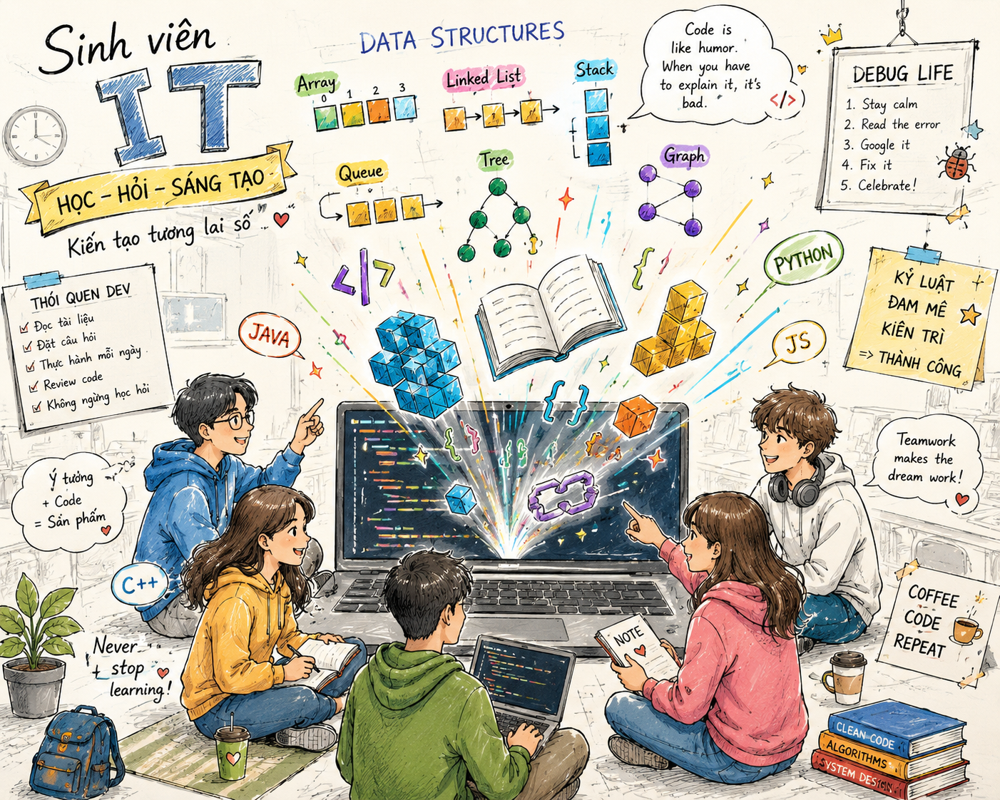
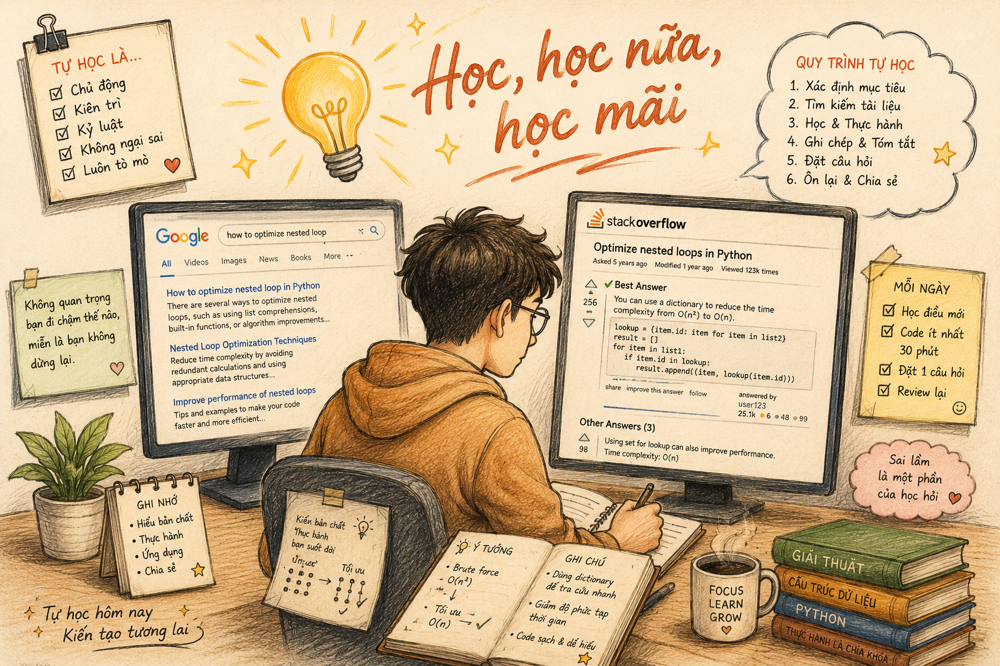
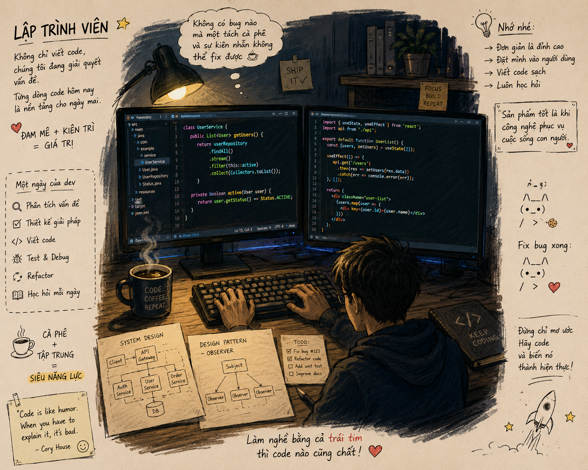
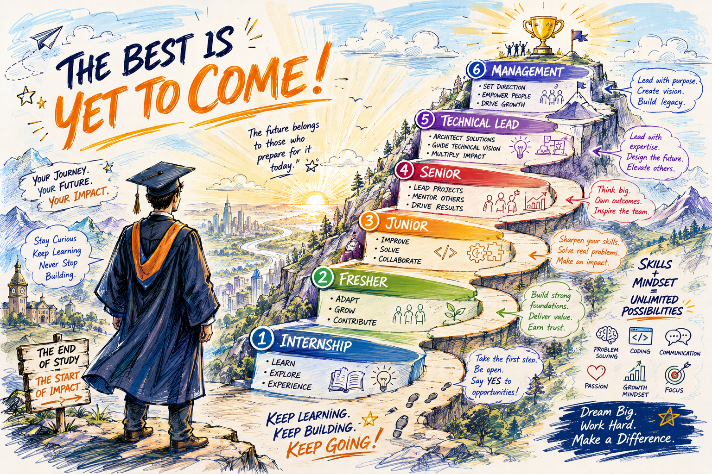
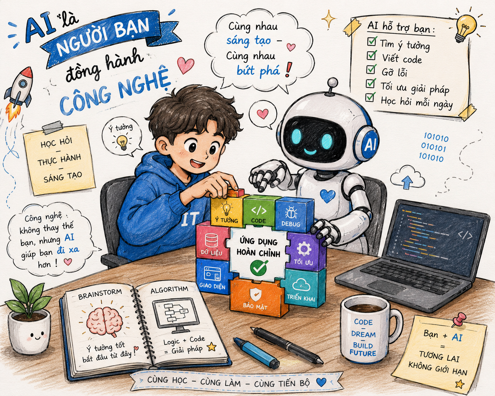
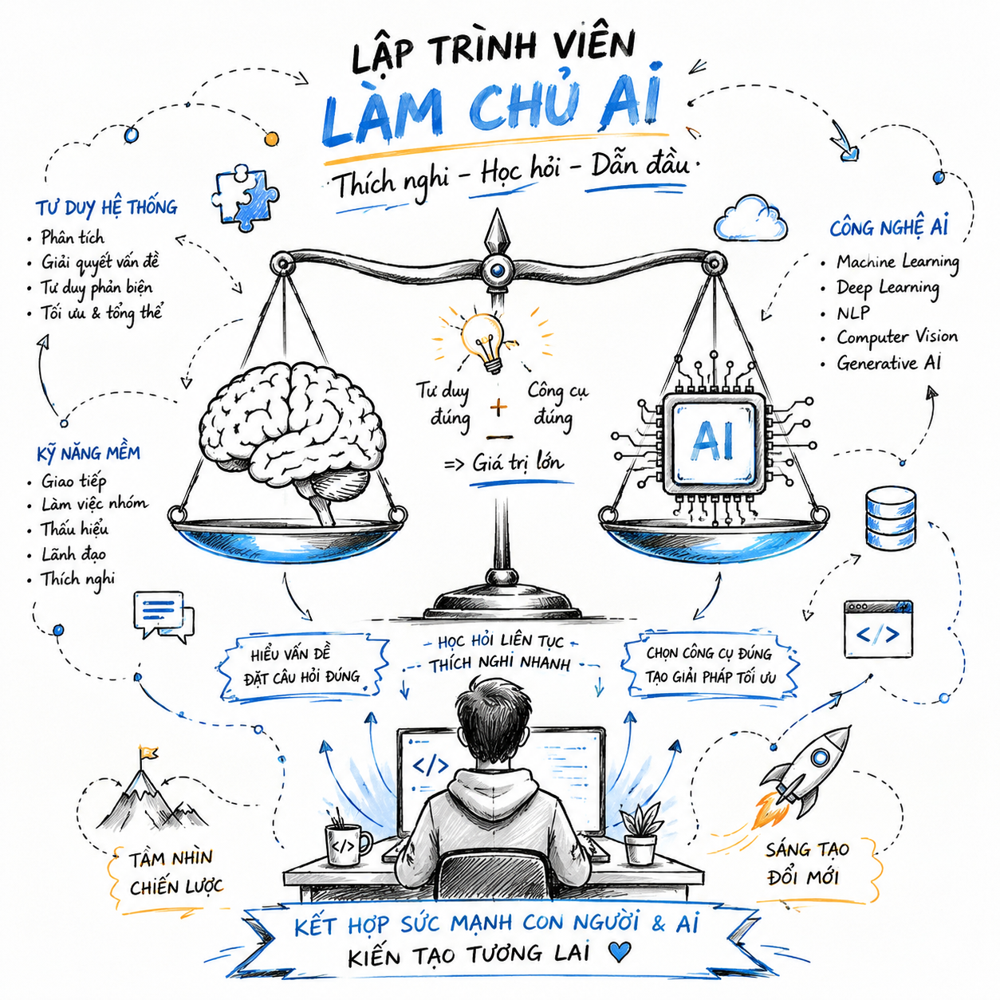
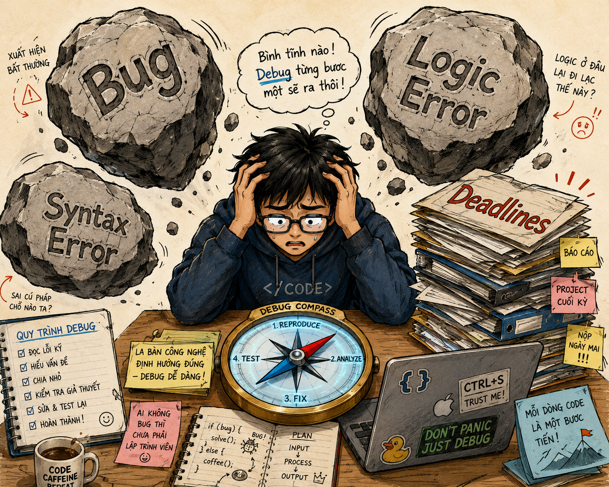

GIỚI THIỆU NGÀNH
CÔNG
NGHỆ THÔNG TIN
Giảng viên hướng dẫn:
Th.S. Nguyễn Thị Thuỳ Trâm
Trường Đại học Công nghệ Thông tin – ĐHQG-HCM
Thành viên nhóm thực hiện:
Nhiệm vụ chính:
-
• Nguyễn Tùng Anh (26730006)Nhóm trưởng - Phân công, theo dõi tiến độ, tổng hợp nội dung
-
• Trần Minh Lợi (26730044)Báo cáo nội dung
-
• Nguyễn Hồ Dương Phú (26730055)Cắt ghép video
Tài liệu & Ý tưởng:

MỤC LỤC NỘI DUNG
NGÀNH CÔNG NGHỆ
THÔNG TIN
Định nghĩa học thuật:
Công nghệ Thông tin (IT) là ngành nghiên cứu, phát triển, quản lý hệ thống phần cứng, phần mềm, mạng máy tính và cơ sở dữ liệu nhằm xử lý, lưu trữ, truyền tải thông tin hiệu quả.
Các lĩnh vực cốt lõi:

CÔNG CỤ HỖ TRỢ
HIỆU QUẢ CỰC ĐẠI
Truy cập & Tự học:
- Kết nối kho tàng kiến thức toàn cầu qua Internet chỉ với vài click.
- Học tập không biên giới trên Coursera, edX, Udemy, YouTube.
- Sử dụng Generative AI (ChatGPT, Claude, Gemini) hỗ trợ dịch thuật, giải thích mã nguồn và thuật toán 24/7.
Quản trị & Cộng tác học tập:
- Lưu trữ mây dữ liệu an toàn trên Google Drive, OneDrive.
- Cộng tác nhóm trực quan qua Notion, Trello, Google Workspace.

PHÁT TRIỂN TƯ DUY
& PHƯƠNG PHÁP HỌC
- Tư duy logic cao độ thông qua xây dựng cấu trúc dữ liệu và giải thuật.
- Tư duy hệ thống khi phân tích kiến trúc phần mềm phức tạp.
- Kỹ năng giải quyết vấn đề (problem-solving) qua quy trình debug và tối ưu hóa code liên tục.
"Code is like humor. When you have to explain it, it’s bad."
– Cory House

CNTT TRONG MỌI
NGÀNH NGHỀ HIỆN ĐẠI
🩺 Y TẾ THÔNG MINH
Bệnh án điện tử, chẩn đoán bệnh hỗ trợ bởi AI, y tế từ xa (Telemedicine).
🎓 GIÁO DỤC 4.0
Hệ thống LMS, đào tạo trực tuyến toàn cầu, lớp học ảo tương tác VR/AR.
💰 TÀI CHÍNH - FINTECH
Blockchain, giao dịch thuật toán tự động, ví điện tử thông minh bảo mật.
🏭 SẢN XUẤT TỰ ĐỘNG
IoT công nghiệp, robot tự động hóa, quản lý chuỗi cung ứng thông minh.
THỰC TẾ: Không còn ngành nghề nào hoạt động hiệu quả mà không phụ thuộc vào CNTT.
ĐẶC THÙ CÔNG VIỆC
KỸ SƯ PHẦN MỀM
Hành động hằng ngày:
- Thiết kế giải pháp, viết code sạch, kiểm thử, debug, tối ưu hệ thống.
- Cộng tác nhóm công nghệ thông qua hệ thống quản lý mã nguồn Git, GitHub, GitLab.
- Giao tiếp với khách hàng hoặc các nhóm nghiệp vụ (Business) để làm rõ yêu cầu phần mềm.
Giá trị cốt lõi mang lại:
- Xây dựng giải pháp kỹ thuật số giải quyết các bài toán lớn của xã hội.
- Đảm bảo an toàn thông tin, bảo mật dữ liệu cho người dùng.
BỐI CẢNH BÙNG NỔ
TRÍ TUỆ NHÂN TẠO
- Generative AI (2022-Nay): ChatGPT, Claude, Gemini tái cấu trúc cách con người làm việc và code.
- Đầu tư công nghệ dịch chuyển: Các ông lớn Big Tech (Microsoft, Google, Meta) rót hàng tỷ USD vào AI lõi.
- Thách thức mới cho nhân lực: Sự chuyển dịch mạnh sang Big Data, Generative AI yêu cầu kỹ sư nắm bắt kỹ năng Prompt Engineering, MLOps, Data Pipeline.
Đòi hỏi kỹ sư CNTT phải học hỏi và tự đổi mới liên tục.

CƠ HỘI VIỆC LÀM
LUÔN RỘNG MỞ!
1. Nhu cầu nhân lực CNTT toàn cầu cực kỳ lớn
Gartner dự báo thiếu hụt 85 triệu nhân sự IT chất lượng cao vào 2030.
2. Không giới hạn biên giới (Remote & Global)
Khả năng làm việc từ xa, Freelancer cho doanh nghiệp đa quốc gia với mức lương toàn cầu.
3. Xuất hiện hàng loạt ngành học & định hướng mới
Sự lên ngôi của AI Engineer, Data Scientist, Cybersecurity Specialist, Cloud Architect...
THÔNG SỐ THỊ TRƯỜNG LAO ĐỘNG IT
Xu hướng tăng trưởng nổi bật (2024-2025):
- AI Engineer: Nhu cầu tuyển dụng thực tế tăng vọt 300% trong 2 năm qua.
- DevOps & Cloud Computing: Luôn nằm trong Top 5 vị trí khó tuyển dụng nhất của các tập đoàn lớn.
- Cybersecurity: Tình trạng thiếu hụt nhân lực khẩn cấp diễn ra trên phạm vi toàn cầu.

KHOẢNG CÁCH
(GAP)
TRONG ĐÀO TẠO
Giáo trình truyền thống:
Chu kỳ cập nhật từ 3-5 năm. Nặng về lý thuyết cơ bản, thiếu sự tiếp cận trực tiếp với các quy trình công nghiệp thực tế.
Thực tế công nghệ AI:
Thay đổi liên tục theo từng tuần. Đòi hỏi kỹ năng thực chiến ngay lập tức như MLOps, xử lý dữ liệu lớn, Prompt Engineering...
HẬU QUẢ thực tế:
Sinh viên ra trường thiếu kỹ năng thực chiến, doanh nghiệp bắt buộc phải tái đào tạo từ đầu. Xảy ra nghịch lý thất nghiệp mặc dù thị trường thiếu nhân lực.

ĐÒN BẨY KHỔNG LỒ
CHO NGƯỜI LÀM IT
Các trụ cột thúc đẩy chuyển đổi số:
Tác động lớn nhất:
- Đem lại mức thu nhập cực kỳ xứng đáng và cơ hội thăng tiến toàn cầu.
- Tạo ra tác động xã hội to lớn: Code bạn viết ra có thể trực tiếp làm thay đổi cuộc sống của hàng triệu con người.
AI: TRỢ LÝ ĐẮC LỰC
HAY ĐỐI THỦ ĐÁNG GỒM?
⚠️ THÁCH THỨC:
Học sinh, sinh viên lạm dụng AI làm thui chột khả năng tự suy luận sâu. Các công việc lập trình đơn giản (Coder sơ cấp) dần bị AI thay thế.
🚀 CƠ HỘI VÀNG:
Công cụ Copilot/AI giúp tăng tốc độ viết code, boilerplate và tạo test gấp 3 lần. Giúp sinh viên vùng sâu tiếp cận bình đẳng với tri thức công nghệ hàng đầu thế giới.
"AI không thay thế lập trình viên giỏi. AI thay thế lập trình viên KHÔNG biết dùng AI."

AI GIÚP HỌC TẬP
& MỞ RA NGHỀ MỚI
Gia sư lập trình 24/7:
- Giải thích chi tiết các thuật toán cấu trúc dữ liệu phức tạp theo ngôn từ dễ hiểu nhất.
- Tự động phát hiện lỗi biên dịch (Syntax Error), giải thích và debug cực nhanh.
Ngành nghề AI đầy triển vọng:

CÔNG THỨC LÀM CHỦ
THỜI ĐẠI AI
TƯ DUY ĐÚNG + CÔNG CỤ ĐÚNG = GIÁ TRỊ KHỔNG LỒ
Kỹ năng mềm quyết định sự khác biệt:
- Tư duy phản biện (Critical Thinking) để đánh giá tính xác thực của thông tin AI cung cấp.
- Khả năng đồng cảm & thấu hiểu khách hàng mà các dòng mã AI không bao giờ thay thế được.
- Tư duy hệ thống lớn, thích nghi nhanh với công nghệ mới.

THỬ THÁCH NGHỀ
NGHIỆP
(PHẦN 1)
1. Khối lượng tri thức khổng lồ & Quá tải thông tin
Công nghệ thay đổi chóng mặt từng ngày, dễ dẫn đến cảm giác kiệt sức (burnout).
2. Chuyển đổi tư duy máy tính
Khó khăn ban đầu khi học cách suy nghĩ logic như máy tính, hiểu thuật toán sâu xa.
3. Giáo trình nặng toán lý thuyết
Thiếu cơ hội cọ xát với các dự án thực tế quy mô lớn của doanh nghiệp trong giai đoạn đầu.

ÁP LỰC
DEADLINE
& TÂM LÝ KẺ GIẢ MẠO
4. Áp lực thời gian & Đạt chuẩn chất lượng
Code chạy được và code tốt là hai bài toán hoàn toàn khác nhau. Áp lực mất ngủ vì bug.
5. Hội chứng kẻ giả mạo (Imposter Syndrome)
Dễ rơi vào tâm lý tự ti so sánh bản thân với "siêu nhân" công nghệ trên GitHub hay LinkedIn.
6. Chi phí thiết bị chuyên nghiệp
Đòi hỏi thiết bị có cấu hình đủ mạnh để huấn luyện AI hoặc phát triển đa nền tảng.
AI CÓ THỰC SỰ
LÀ
MỘT KHÓ KHĂN?
Những nguy cơ tiềm tàng:
- Sinh viên lười suy nghĩ độc lập vì thói quen phó mặc toàn bộ cho AI tạo code hộ.
- Mất đi năng lực xử lý tận gốc vấn đề khi thiếu vắng kết nối Internet/AI.
- Gặp lỗi "ảo giác hệ thống" (Hallucination) do không có khả năng kiểm định độ tin cậy của AI.
QUY TẮC VÀNG: Dùng AI để tăng tốc độ thực thi, không dùng AI thay thế cho não bộ.
XÂY DỰNG MÔ HÌNH
NĂNG LỰC CHỮ T
(T-SHAPED)
🧱 NỀN TẢNG RỘNG (Broad Base):
Toán học rời rạc, Cấu trúc dữ liệu & Giải thuật, Kiến trúc hệ điều hành, Hệ cơ sở dữ liệu.
⚡ CHUYÊN SÂU HẸP (Deep Expertise):
Lựa chọn một mũi nhọn để đi sâu: Phát triển Web/Mobile, AI Engineer, MLOps, Cybersecurity.
🗣️ KỸ NĂNG BỔ TRỢ:
Ngoại ngữ (Tiếng Anh là bắt buộc), Kỹ năng teamwork, Kỹ năng tự học thông tin học thuật.

LỘ TRÌNH 4 NĂM ĐẠI HỌC THỰC CHIẾN
NĂM 1–2: XÂY DỰNG KHUNG MÓNG VỮNG CHẮC
Học chắc các môn cơ sở ngành, rèn luyện tư duy lập trình căn bản. Thực hành viết code tối thiểu 2-3 giờ mỗi ngày. Tích cực tham gia các câu lạc bộ lập trình, cuộc thi Hackathon.
NĂM 3: CHỌN MŨI NHỌN CHUYÊN SÂU & THỰC TẬP
Xác định hướng đi chuyên sâu (Web, AI, Cloud...). Bắt tay thực hiện các dự án cá nhân thực tế (Personal Projects), đóng góp mã nguồn mở, tìm cơ hội thực tập sớm (Internship).
NĂM 4: CHUẨN BỊ BƯỚC VÀO THỊ TRƯỜNG LAO ĐỘNG
Hoàn thiện hồ sơ năng lực cá nhân (GitHub Portfolio), chủ động tìm hiểu thị trường tuyển dụng. Luyện tập giải thuật, thiết kế kiến trúc hệ thống để sẵn sàng phỏng vấn.
4 LỰA CHỌN PHÁT TRIỂN
SỰ NGHIỆP LỚN
1. ĐI LÀM NGAY (Fresher/Junior)
Gia nhập công ty công nghệ để có thu nhập, cọ xát thực tế sớm. Đích đến trở thành Senior sau 3-5 năm.
2. HỌC LÊN CAO (Master/PhD)
Đi sâu vào nghiên cứu khoa học cốt lõi. Cực kỳ phù hợp với các nhánh AI, Data Science, Cryptography.
3. KHỞI NGHIỆP (Startup)
Tự do kiến tạo sản phẩm riêng, tiềm năng kinh tế khổng lồ. Tuy nhiên đòi hỏi kỹ năng vận hành và rủi ro lớn.
4. FREELANCE / REMOTE GLOBAL
Tự do về thời gian, làm việc xuyên biên giới. Đòi hỏi tinh thần kỷ luật tự giác thép và khả năng quản lý tài chính.
LỘ TRÌNH TIẾN THÂN CỦA KỸ SƯ PHẦN MỀM
CẤP 1: INTERN
Thời gian 6-12 tháng. Tập trung học hỏi quy trình công nghiệp thực tế, làm quen văn hóa tổ chức và xây dựng các mối quan hệ ban đầu.
CẤP 2: FRESHER
Thời gian 0-1 năm. Rèn luyện thích nghi, làm chủ kỹ năng cơ bản của dự án và đóng góp giải quyết các module nhỏ được giao.
CẤP 3: JUNIOR
Thời gian 1-3 năm. Có khả năng tự phát triển tính năng độc lập, cải thiện chất lượng code và bắt đầu phối hợp nhóm hiệu quả.
CẤP 4: SENIOR
Thời gian 3-5 năm. Dẫn dắt kỹ thuật các dự án nhỏ, có vai trò hướng dẫn (Mentoring) Junior và chịu trách nhiệm trực tiếp về chất lượng đầu ra.
CẤP QUẢN TRỊ & MŨI NHỌN CÔNG NGHỆ
⚡ TECHNICAL LEAD (5–8 Năm):
Kiến trúc sư giải pháp phần mềm hệ thống lớn, thẩm định công nghệ, quyết định Technology Stack kỹ thuật cho toàn tổ chức.
💼 MANAGEMENT (8+ Năm):
Thiết lập định hướng chiến lược doanh nghiệp, tuyển dụng và phát triển con người, chịu trách nhiệm tăng trưởng doanh thu.
"Tương lai là do bạn kiến tạo. Đam mê + Kiên trì + Khác biệt = THÀNH CÔNG!"
KẾT LUẬN & THÔNG ĐIỆP TỔNG KẾT
- CNTT là động cơ cốt lõi: Không chỉ dừng lại ở công cụ học tập mà là đòn bẩy buộc phải có để phát triển mọi ngành kinh tế.
- Cơ hội việc làm luôn rộng mở: Nhu cầu thị trường liên tục vượt cung, mức đãi ngộ hấp dẫn bậc nhất.
- Chuyển đổi số là thời cơ vàng: Giúp kỹ sư IT có khả năng tác động xã hội lớn chưa từng có.
- AI là bạn đồng hành: Người biết làm chủ và ứng dụng AI sẽ thay thế người không biết dùng AI.
- Khó khăn là động lực phát triển: Bug, deadline là chất xúc tác rèn giũa bản lĩnh lập trình viên.
- Chiến lược rõ ràng: Nền tảng rộng chắc + Mũi nhọn chuyên sâu + Học tập liên tục = Chìa khóa vàng thành công.
XIN CHÂN THÀNH
CẢM ƠN!
Nhóm xin bày tỏ lòng cảm ơn chân thành tới Th.S. Nguyễn Thị Thuỳ Trâm đã tận tình hướng dẫn, chỉ bảo nhóm hoàn thành bài báo cáo tiểu luận này.
"Tự học hôm nay – Kiến tạo tương lai. Làm nghề bằng cả trái tim thì code nào cũng chất!"